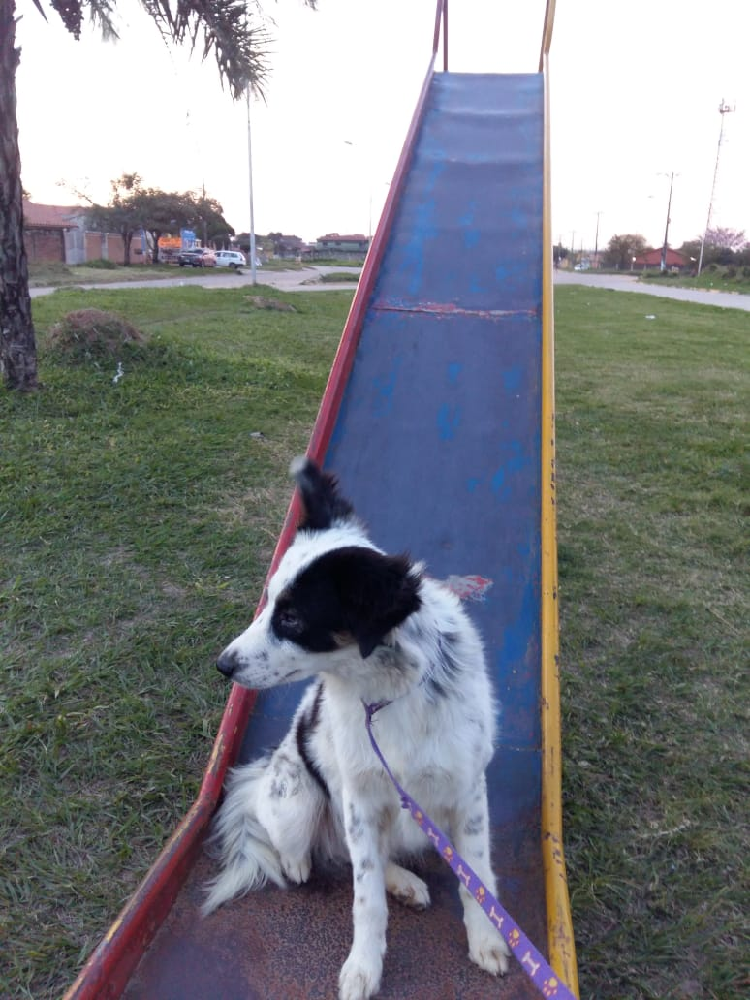

La vida de Jack
Érase una vez, en un pequeño y acogedor hogar en el corazón de la ciudad, vivía un perro extraordinario llamado Jack. Jack no era un perro cualquiera; su espíritu aventurero y su inconfundible apariencia lo hacían destacar entre la multitud. Con su pelaje blanco como la espuma del mar y una mancha negra alrededor de su ojo izquierdo, Jack siempre había soñado con ser un temible pirata que conquistaría los siete mares.
Jack nació en la casa de una amable y cariñosa mujer llamada More. Desde el momento en que abrió sus ojos, Jack mostró un espíritu libre y un deseo incesante de explorar el mundo. Aunque More lo colmaba de amor y cuidado, Jack no podía evitar soñar con aventuras más allá del patio trasero. Cada vez que miraba su reflejo en el espejo, veía a un valiente pirata con un parche en el ojo, listo para zarpar en busca de tesoros ocultos.
Uno de los pasatiempos favoritos de Jack era jugar en los charcos de agua después de una lluvia. Se imaginaba que aquellos charcos eran los vastos océanos que debía surcar con su barco pirata. Saltaba y chapoteaba, como si estuviera navegando en medio de una tormenta, con el viento agitando su pelaje y el salitre del mar rozando su nariz. Los charcos eran su océano, y las hojas caídas eran las islas llenas de tesoros por descubrir.
La vida de Jack dio un giro inesperado cuando More tuvo que mudarse a un lugar donde no podía llevar a Jack. Fue entonces cuando entró en escena Limber, un hombre de corazón generoso y espíritu aventurero. Limber había oído hablar de las aventuras soñadas de Jack y decidió darle un nuevo hogar. Desde el primer momento en que se conocieron, se forjó una conexión especial entre ellos.
Con Limber, Jack encontró un nuevo capitán para sus aventuras piratas. Juntos, exploraban parques y senderos, que para Jack eran mares desconocidos y tierras por conquistar. Cada día era una nueva oportunidad para embarcarse en una expedición. Jack, siempre tan feliz de ver a Limber llegar a casa, lo recibía con saltos y ladridos de alegría, como si le diera la bienvenida a su barco después de un largo día de navegación.
Limber también tenía un espíritu juguetón y a menudo organizaba búsquedas del tesoro en el jardín. Enterraba pequeños premios que Jack desenterraba con entusiasmo, como un verdadero pirata en busca de su botín. Las tardes estaban llenas de risas y aventuras, y Jack se sentía cada vez más como el pirata temible que siempre había soñado ser.
Aunque Jack nunca llegó a surcar los mares reales, en su corazón y en su imaginación, había conquistado todos los océanos del mundo. Con su parche negro natural y su actitud intrépida, se convirtió en el pirata más querido y valiente, no solo en su propio mundo de fantasía, sino también en la vida de aquellos que lo amaban.
Jack vivió una vida plena y feliz junto a Limber, siempre soñando con nuevas aventuras y tesoros por descubrir. Y aunque los mares que navegó eran de hierba y charcos, para él eran tan reales y vastos como cualquier océano. Jack, el perro pirata, siempre será recordado como el valiente conquistador de los siete mares, el fiel compañero que enseñó que la verdadera aventura se encuentra en el corazón y la imaginación.